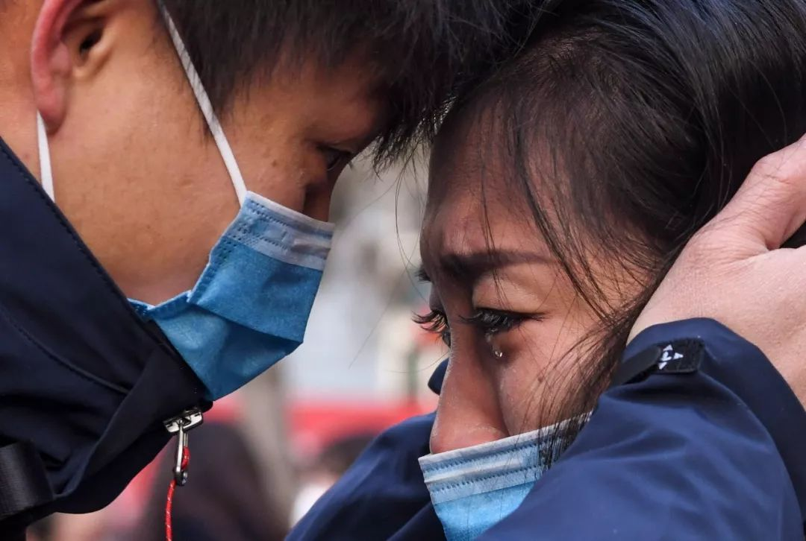
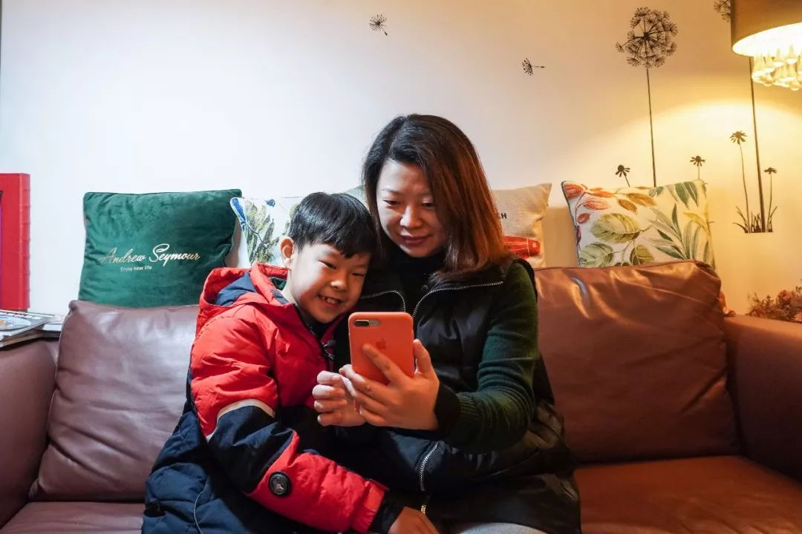
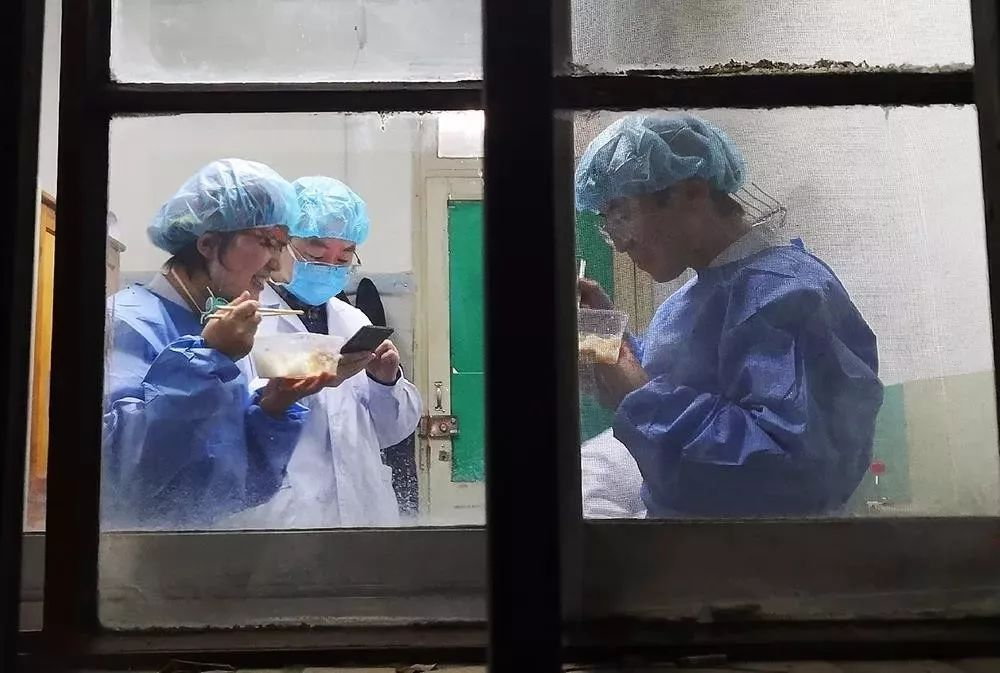
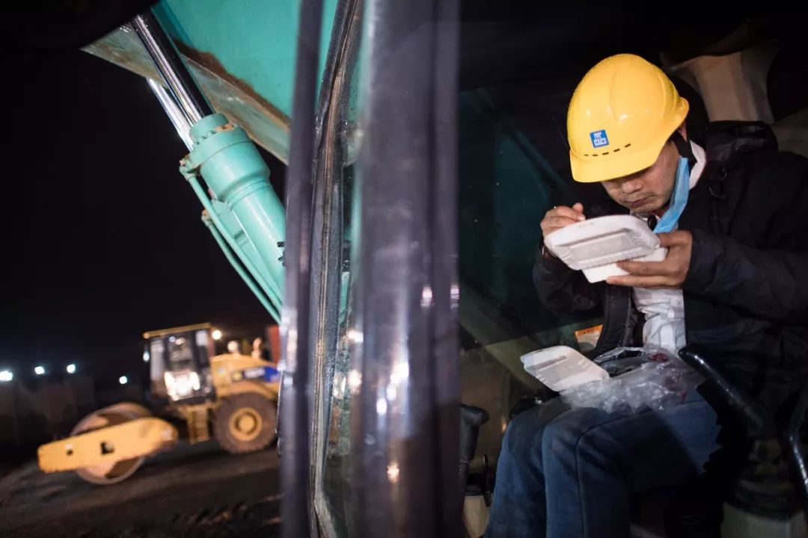
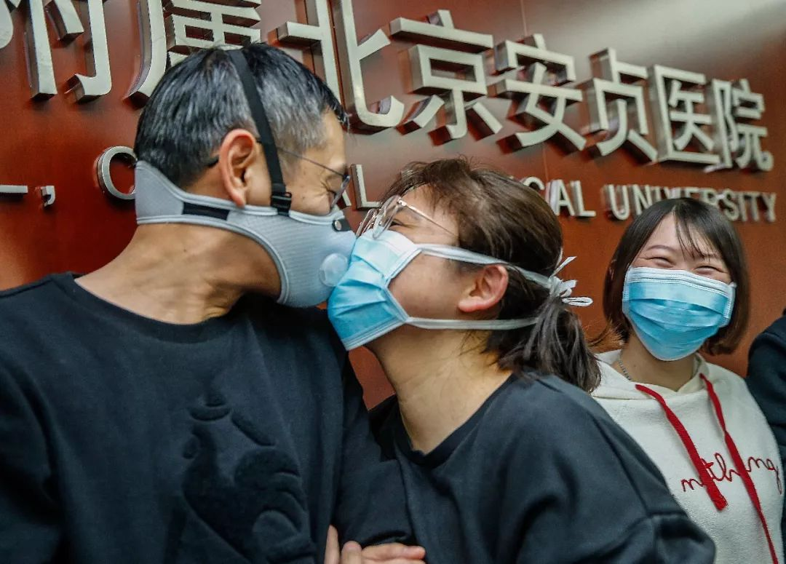
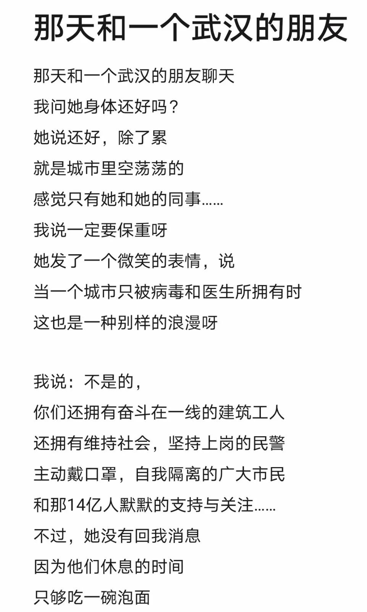

武汉“封城”的第一天
原文链接 备份链接 文 | 王彦入 王丹妮 程静之 殷盛琳 李晓芳 周航 叶雯 曾宪雯 编辑 | 王珊 陶若谷 33岁的刘科戴上两层口罩独自走进地铁，夹杂在路人中间。像他这样拉着行李箱的人并不少见，彼此间默契地保持着距离。三天前，他刚刚从 …

昨天，我们发起了征集，请身在疫区的同胞、奋战在疫情第一线上的医护人员、全国各地留守家中防疫的人们讲述这个春节发生的真实故事，在后台收到的近百份留言中，我们筛选并刊登如下，我们是倾听者，也是见证者——
01
这个春节，是过的最独一无二的一个春节！怎么说呢，百感交集！有焦虑，有担忧，有幸福……
腊月29，我的爸爸妈妈公公婆婆都来齐了。那天是武汉开始封城的那天——2020年1月23号。我是从22号开始对疫情敏感起来，从那时感觉它开始危及到我们了！
之前科室有个同事是武汉的，在腊月23号之前我们就谈论过武汉华南海鲜市场的病毒感染问题，当时只是作为一个社会热点新闻谈论了一下，同事也说我回家还要经过汉口火车站呢，都没有太在意。我21号接来了爸妈，回到襄阳后，疫情已经开始严重了，大家开始更多的讨论这个事儿了。
先说一下我们家的情况：我老公家是天门的，我家是襄阳保康的，我们在襄阳买房定居了，今年打算在这里新房过年，我们这里有在新房过第一个年的传统。我也非常期待着两边的父母今年在新房过个热热闹闹的新年。
可是武汉封城了！封城了！——我突然意识到疫情来到了我的身边。这个时候突然慌了，不知所措，我不希望我的公公婆婆过来了！天门离武汉很近，他们那里大部分人都是在武汉工作，我老公小姨一家，我老公小叔一家，他们常年在武汉工作。年底，结婚聚会扎堆，传染是很容易的事儿——他们不愿意早点过来就是因为有好几家宴席需要参加。
1月22号，我婆婆打电话告诉我，要带野味狗獾子过来吃，说专门买的让我们尝尝鲜，要是在以前，我并不会觉得有什么，可能也会吃。但是现在，我立马说，野味不能吃了，会传染病毒，而且让他们不要串门可！
可是，公公说没事儿没事儿。我立马给我老公说，让他去劝说。我不知道他怎么说的，最终他们还是带过来了而且还放在了餐桌上！我最终怀着焦虑迎接了我的公公婆婆们，他们晚上12点以后到达襄阳——我婆婆第二天中午就把狗獾子端上了饭桌。
我老公嫌我天天在他耳边叨叨疫情，他嫌我烦。出门让他们带口罩，他们不戴，我妈说的很坚决，“我懒得戴口罩！”我真的快崩溃了！只有我一个人觉得重要，可是他们不在乎，那么防控又有什么意义！
随着疫情的加重，23号晚上我们去给孩子买奶粉，在我的劝说了，我爸和我老公戴上了口罩出门。那一刻，我的心安定了些！之后的几天，他们也看到了事态越来越严重，各个地方封城，交通管制，不让出门，对他们触动很大。购买生活物资都是我和老公戴着口罩去买，买了立马就回。
我记得一个很深刻的对比，22号晚上我们出门去鼓楼北街，只有一半以上的人戴了口罩，那个地方是襄阳最繁华的街道！到了23号我们去小区超市，十个人中只有一两个没戴，几乎都戴上了口罩，这个变化真的让我大吃一惊！
从除夕开始，我们一大家子就窝在家里了。一家人一起关注疫情，一起看新闻，一起聊天，逗宝宝，看电视剧，包饺子，做饭，做卫生，其乐融融！这么多年来很少有这么安静祥和的春节了，我们很享受这样真正陪伴家人的时光！
说实话心里也是隐隐的关注着公公婆婆的身体的，他们身体底子差，免疫力低下，是特别易感人群，他们的一声咳嗽我都会特别注意。不过到目前为止，他们都很好！我也渐渐开始安心了！希望我们都好好的，共同度过这个春节！襄阳加油！武汉加油！我们一定会好起来！
——天之娇子 湖北襄阳市
02
隔离病毒 ，但隔离不了爱。大年初二本是我和男友的订婚宴，但因为我是一名基层医生， 因为男友是人民警察，我们在那天都各自奔赴岗位——他在高速卡点执勤，告知我，他要从凌晨开始到早上八点，真的特别心疼。可能我们接下来半个月都见不到了。
——夏天 浙江省衢州市

1月28日，新疆乌鲁木齐，在新疆医科大学院内，医疗队队员、新疆医科大学第一附属医院重症监护室医护人员吕俊（左）与家人道别
03
我，武汉人，2020年1月19号，带着刚退休的爸爸，和老公孩子一起去厦门旅游，票是几天前就定好的，计划23号回，和留在武汉的妈妈、弟弟和弟媳一起过新年，今年是弟弟在武汉新房过的第一年，按照老家的习俗，大家要在新家一起过个热热闹闹的新年。
到了厦门，天很暖，一大家子逛着中山路，计划着第二天的鼓浪屿之行。1月20号，逛了厦门的网红景点，然后又去了心向许久的鼓浪屿，旅途中已有些消息说武汉有了肺炎，老公也随口说了几句武汉好像有了冠状肺炎，我不以为然，这个关于华南海鲜市场还有不明肺炎的事情，1月初的时候听同事提起过，后来又听说是谣言，似乎也看到过不存在人传人的可能，所以我们都没放在心上，再说，昨天从武汉离开的时候，还一片宁静祥和，所以我和老公都没放在心上，继续游玩，还为晚上去哪儿吃饭商量了半天。
晚上九点多到了宾馆，我首先和导游敲定了明天的土楼行程，随后刷了刷手机，关于肺炎的消息多了起来，但是氛围还不算紧张，一个武汉的朋友还发了张带口罩抢着买房子的照片。我们还戏谑道冒着生命买房子。
1月21号一大早坐了大巴去土楼，路上老公和爸爸还买了一大堆的茶叶和烟，想着过年送给亲朋好友，整整两大袋子。在路上的时候，有位亚美利亚的游人聊起天，他说到了武汉肺炎的事情，老公笑着说连外国人民也知道了武汉。游玩回城的路上，游客中有人提到了武汉，我微笑着说道，我们就是武汉来的，离开的时候武汉地铁上都没人带口罩，正常的很，让大家不用太紧张，大家互相笑笑，没说什么了。
晚上到了酒店，还在考虑到哪儿吃饭，关于肺炎的消息已经铺天盖地了，人传人，感染人数等刺激了我，妈妈也从武汉打来了电话，嘱咐我们早点回家。我坐不住了，点了外卖，就赶紧去酒店附近买口罩，先去的两个药店都没有，卖完了，我更加紧张了，跑了好几条街，看了商店就进去问，终于买到了几包口罩，不管价格，也不管是不是用。
买回来，有几个是防雾霾的，有些没有包装袋，看起来质量不好，但是这个时候有了口罩似乎心也安定了不少。折腾到十一点，游玩的兴致一点都没有了，我们只想着赶紧回家，火车票是23号的，就准备改签到22号，票都没了。厦门到长沙的票还有，决定立刻买到长沙，再转武汉或者老公的老家赤壁。
一夜无眠，耳边始终回荡着妈妈的话：无论如何，你们把你爸爸送回武汉过年！22号，收拾好行李，我们把口罩带的严严的，踏上了回家的路。完全没有出来时候的轻松，一路火车上没有取口罩，到了长沙已是晚上10点半了，下着小雨，网上原定的酒店原来是民宿，卫生条件看起来很一般，有老人和孩子，我们就赶紧在周围换了一家商务酒店，很快就入住了。
一家人折腾到半夜十二点，终于入睡了，想着明天就能到赤壁，老公留在赤壁陪婆婆过年，我就能按妈妈的要求把爸爸和孩子送回武汉过年了。
也许是头天没休息好，也许是太紧张了，这一晚睡的不错。23号，一觉醒来快到九点了，醒来后知道的第一件事就是武汉封城了，太不可思议了，昨天网上疯传武汉有可能封城的时候，老公还说，非典都没有封城的，所以我们没想到武汉这次竟然封城了，还这么快。
老公还比较理性，他说如果武汉封城了，接下来武汉周围的八加一城市圈就会封，然后就是封小区，虽然我知道他说的很有道理，但是我还是不相信地问：会吗？真的会有那么严重吗?这个时候，妈妈打来电话，武汉我们回不去了。可是回赤壁，妈妈也更不放心了，老公家里兄弟多，大哥大嫂还有二妹都从武汉回，接触的人多更不安全。
思前想后，我决定就在长沙酒店先待着，哪儿也不去，过完三天年再说。
这时候，关于肺炎的消息铺天盖地，我们也真正地感受到严重的程度。留在酒店，父亲是首先排斥的，他一直不习惯住酒店，可是事已至此，他也只能接受。
我们出门的时候没带什么衣服，这时候都是问题。24号，大年三十，我们生平第一次在酒店过春节，餐厅人不多，当时好像就我们一桌，虽然心酸，但是毕竟是新年，父亲点了一条鱼，他说要年年有余。想起远在武汉的亲人，我们在外也要好好的。我们请服务员帮忙拍下了这顿难忘的团圆饭，发给了亲朋，送出了祝福。
除夕夜，酒店房间孩子和父亲看着电视，我和老公刷着手机，不知不觉泪流满面，武汉医务人员奋战一线，武汉加油，武汉请求物资的消息在朋友圈刷屏。作为一个在武汉十几年，求学然后工作结婚的人，我对这个城市的感情是复杂的，我不会说武汉话，但是我有武汉的朋友，武汉的同事，武汉的家，这一刻，我有作为武汉人深深的身份认同感，没错，我就是武汉人，从别处到武汉扎下了根的新武汉人。
除夕夜，外地的朋友都在关心地问我，我回复：一切安好！25号大年初一，吃了早餐回到房间，老公说看到了外地酒店赶武汉人的消息。我的心情陡然也沉重起来了，不会那么惨吧，好歹让我们把三天年过完吧。
一上午安安静静，孩子憋在酒店，只能和外公看动画片，孩子5岁了，每天酒店所在的辖区有人为我们测量体温，她大概也知道了情况，她知道了我们暂时回不了家，也不哭不闹了。初一中午12点左右，酒店打来电话通知我们2点前退房，因为按照上面的要求酒店不营业了。我接到电话懵了，没想到网上传的武汉人被赶的情况竟然如此真实地发生在我们身上。
我告诉酒店，我们没地方去，如果上面让酒店关门，对我们这些滞留的武汉人有何举措没?酒店说不知道，目前没有收到。挂了电话，看着父亲和孩子还在安静地看电视，我不知道该怎么告诉他们，我们接下来无处可去了，我们被赶了。
老公赶紧给当地辖区的卫健委打电话，对方说并没有关闭酒店，再打市长热线，对方接了电话也说目前没有安置武汉游客的具体方法。我冲下楼，找到酒店前台，“外面下着大雨，天气这么冷，我们有老人，有孩子，这样出去没病也会惹出病，你们忍心吗？我们不是不想回家，可是我们回不了家！我们不是逃出来的，我们想回去，我的妈妈和弟弟弟媳都还在武汉，还在家，我们19号出来的，谁知道会发生这样的事情，你让我们出去，我们现在能到哪儿去?！”
哭着说完这些，我知道自己失态了，可是如果我不据理力争，大年初一我们就会流落街头，无处可去。从没这么无力过！前台的服务员看我不会走的架势，赶紧打电话给店长，经交涉，同意我们继续住，但是餐厅要关门，没有饮食让我们去买点泡面备着，也没有人再做卫生，房间要换到8楼，另外房费要从三百涨到五百，不能按照网上订的房费了。
此时此刻，我能说什么，除了答应把我们留下，我们还能有什么不同意。我抬头看看了酒店大厅的方间价格，上面还赫然写着三百多。我指着价格问道：哪儿有五百?上面明明是三百多。服务员瞥了一眼，那好吧，就按那个价格。我除了无语，还能感激她们没把我们赶出去吗？
回到房间，心中万般滋味，转念一想，人之常情，生命的安全面前，谁不怕了?！不管是涨价还是关闭餐厅，都是让我们自己离开那儿。可是没有食物，只吃泡面那怎么行，更何况附近的超市不多，楼下的小商店过年不营业。无奈之下，只好打了长沙一个朋友的电话，昨天她知道我们滞留长沙，就让我们去她家住，我们怕麻烦别人，就说在酒店过了安全期再去。如今，面临窘境，不得不再麻烦她。我发了消息给她：姐姐，我们需要你的帮助。
过了一会儿，她联系上我们，得知情况，她发了一个地址给我们，写道：一会儿给你们送钥匙。看到回信，潸然泪下，雪中送炭，大恩大德。终于，在这位姐姐的帮助下，我们住进了她的另一套房子，她父母在她家过年，目前空着，我们住在里面自觉隔离14天到安全。感谢
——圆 湖北武汉市 目前坐标长沙

1月29日，杭州，瞿女士下班回家后跟儿子一起与自19日起便在医院忙碌的丈夫视频聊天
04
我是北京的一名航天职工，老家在湖北省洪湖市，大学毕业后一直在航天系统工作，已经17年了。
随着人到中年，父亲逐日衰老（母亲早已10多年前去世），近几年春节我都是要回湖北老家过年的。由于爱人春节期间要值班，今年我还早早的订好了我和孩子两人从北京到武汉的往返高铁票，就等着回家欢快过春节了。
1月20日早上，看到每日都有增加冠状病毒感染的人数，我有点呆不住了，和爱人商量后，将孩子往返车票都给退了，后来我真庆幸好在没有带孩子回来。20号晚上，我独自一人踏上了回武汉的高铁。
一路无事，当火车快到武汉站时，我看到所有人都戴上了口罩，连不足周岁的小孩也给戴的严严实实，让人有种如临大敌的感觉。但是下了车之后，我看到车站里拉客去旅店的，坐车的，来来往往的，戴口罩的人并不是太多，不由让人想起“只有武汉人不知道自己处在疫区”的段子。
下车后，由于已经晚上十一点，已经没有了武汉回洪湖的大巴，也不好意思麻烦亲戚这么晚来武汉接我，因此提前在武汉订好了酒店。出了站口，不敢在火车站多做停留，我赶紧联系了车上定好的网约车，直奔光谷那边酒店。
第二天上午，联系了表弟直接从酒店接我回洪湖老家。接下来腊月二十八九，村里，镇上一切如常，虽然电视上每天都在说人数增加，但是下面的村镇，大家还是像以往一样买着年货，准备过年，只是有少部分人戴上了口罩。
真正让村里人紧张起来的时候，是钟南山院士赴汉，习主席大年初一召开会议后，市里也在大年初一上午十点发布了封城令，随后各村就行动起来了，采用河南的硬核做法，把村头村尾路都堵上了。之后大家基本上都戴上了口罩，虽然有些人戴的也不对，有些人戴上了也经常取下来，但好歹开始重视了。
随着各处封村消息传来，原本还想这几天或者坐火车飞机去打工所在地，或者自驾车回打工地的广大农村青年们，只能老老实实呆在村里了。大家都戏言，这是这么多年来，春节人最齐，呆的时间最久的一次，有可能的话，估计会是我大学毕业后第一次在家里过元宵了。
这几天在家里，按照农村风俗，大家还会聚在一起打打牌，戴着口罩。但是随着新闻中说这几天是病毒感染的爆发期之后，大家也不敢聚堆了，只能在门口呆着晒晒太阳，聊聊天。有时候想想也觉得这样的日子很惬意，啥都不用干就为社会做贡献了，只是未知的危险时刻伴随左右，真心希望早日结束，回归正常生活。
——浪子 湖北洪湖市
05
第一次如此近距离地感受到死亡的威胁。父亲在一月中旬从江苏回到新疆，回家三天后开始发烧，咳嗽。咽炎是父亲的长年旧病，发热也是有因可寻，一开始大家都没往那处想。
一天夜里我被父亲的起夜咳痰声吵醒三四次，第二天一早，母亲带着他去了市里的指定发热门诊。看病经验很糟糕，新疆零下十几度的天气下，父母被留在一个冷冰冰的隔离间里两三个小时，父亲为了早上的体检一直空腹。终于母亲忍不住了，带着父亲打了半个小时的出租车回了家。
吃过饭没多久，又被医院紧急叫回去，这时已经是下午六点左右。接下来就是两天多的隔离，没有药没有针，每一顿饭母亲都做好打车从城南到城北。一遍又一遍各式各样的检查把父亲逼到了崩溃的边缘，他开始拒绝接我的电话，我也无法见到他。而作为家人的我们同样被隔离在家。
一天晚上醒来，天还没亮，母亲躺在我旁边望着天花板，开始给我交代家里每一张银行卡存着的位置、密码，还有某某某欠的债，也许是暖气烧的太热，我只觉得胸口有点发闷。核酸结果是在上午十一点出来的，检查结果——阴性。我以为麻烦结束了，可没想到，作为普通肺炎患者的父亲，在这种局势下，竟寻不得一处治疗的地方。
打下这段文字的时候，天还没有黑，母亲还没有找到能给父亲打针的地方，我还在想，明天该怎么办，也在想，那些感染的人该怎么办。
——白芷 新疆

1月24日晚，兰州大学第一医院的一线医护人员在吃年夜饭
06
研究生在读，又恐慌，又淡定。
今天是几号，农历初几我已经不太关注了，当然也不像之前过年那样倒数春节了。为了跟踪最新肺炎消息，我专门下载了微博，一醒就要刷一刷。从大概两天前，我和几个朋友已经通过几个公众号察觉到这次病情的严重，尤其有一个同学，她男朋友是北大医学研究生，自然也非常关注这个事情。
也是两天前，由于天冷，我开电动车着了凉，有些头疼发热，流鼻涕。便不断猜想，怀疑自己得了肺炎。白天体温没有升高，晚上升到37.4度，这个温度是我夹了15分钟左右拿出来的，为什么夹那么久，因为我想做最坏的打算。接着我就上网查，我看到深圳发出的通报，体温超过37.3就要去医院，此刻我有些绝望。
于是，晚上，我已经做好了自己可能会确诊的准备，前去我县最大的医院。到了医院发现，护士没带口罩，医生也没戴口罩。我填了登记表，医生问我从哪来的，我说成都，他说回来几天了，我说16晚上回来的，他说那有五六天了？我说嗯。然后也没让我量体温，就让我去检验血常规，拍肺部的片子。等我都检查完这些，交给医生，医生才让我量体温，37.2开了药。我才稍微确定我没事，就是发烧而已。
这两天，确诊人数从200多到了500多。前两天我跟我父母陈述了这个疫情，他们还有些不以为然。昨天晚上我爸刷手机的时候也开始提醒我们了。好在我让他们戴口罩他们也带，只有我妈那个捣蛋分子有时候嫌口罩太闷，跟小孩一样把口罩一撕，扔在桌上，说我不带它。然后我必须让她带。
昨天晚上大概三四点，武汉发出通报要封城。我明白，疫情终于到了控制不住的地步。大家都人心惶惶，有的失眠，有的跟我一样，怀疑自己得了病。
希望疫情快点被控制住。希望中国人都站在一起。希望国家政府加大作为。希望每个人都平平安安。
——清澈湛蓝 河南省开封市
07
大年三十的前一天 我们在短暂地提前拜年后 我回我的娘家，他要坐五个小时的车回到上班的小站。20号左右，即使是边陲小省都已经对疫情有所察觉。22号我特地挑了一辆不经过武汉的高铁回南宁，而他由于赶着天黑前到岗，只能坐G431 途径武汉 。那应该是封城前最后一辆到我们这边的高铁 。
为什么我那么清楚记得这趟车？因为今天新闻爆出了乘坐这趟车的确诊病人。我的心久久不能平静，一周来所有的担心也在今天爆发到极致。
我希望他回家隔离，但听说回家的唯一一趟列车也要停运了。虽然现在出入武汉的车都停了，但疫情结束前他还是要在铁路上公路上来回奔波，出入的是大众避之不及的场所。大敌当前，除了一线的战士，还有无数的在后备孜孜不倦的中国人在坚持和盼望。疫情下的微小的我们，无奈又忧愁，忐忑又充满希望 。
——猪猪唐 广西南宁

武汉火神山医院除夕夜加紧建设，1月24日，在医院建设工地，来自中建三局的挖掘机驾驶员毛元斌在吃盒饭
08
我爸年前来天津的。我妈为了照顾我和孩子，进了腊月就来了。为了避免我爸我妈分开两地过年，所以我爸工厂还没放假我就让我爸请假来了。1.20从山西到天津。1.21带父母去吃了烤鱼。回来到家刷手机发现，钟南山说武汉病毒人会传染人。应该戴口罩。忘记是22号还是23号天津就出现第一例病症了。特别后悔喊父母来天津。
后来疫情越来越严重，爸爸越来越回不去，爸爸工厂本来初六上班，回不去。不过还好今天他主任发短信说明天不开工，等通知。我和爸爸妈妈还有孩子窝在家里。我每天早晨七点准时看丁香地图。想想上班时候闹钟响八回都醒不了。真是讽刺啊。
圈在家里认真学习各个公众号的有效预防的知识，明白了，到处都有细菌，尤其医院。家里屯的菜昨天基本上没有了，我今天赶在市场开门去买，趁着人少，少说话闷头挑菜。挑完菜去楼上超市买了一箱奶，超市老板看我放的几兜菜，关切的问:这么多，你拎得了吗？我只是点点头笑笑。毕竟少说话更安全一些。
我每天都很焦虑。看着医生护士从各地集合去武汉疫区支援，我是党员，只能待在家里。我想做一些事情，想捐款，等单位捐款时我再捐点。希望疫情能早点控制住。我希望我也尽量不焦虑，如果继续焦虑就快抑郁了。我是个单亲妈妈，不能倒下，还要照顾五岁的孩子。加油，武汉。加油，湖北。加油，天津。加油，山西。加油，我最亲爱的祖国！
——安心 天津
09
12月份，我在河北医科大附属第一医院住院，每次经过那块发热门诊的牌子和被临时当仓库的发热门诊时，就会想到非典，也会想到（似乎包括医院）非典这样的疫情永远地消失了。
但从元旦听到武汉制造谣言者被处理，专家辟谣的论调似乎有隐情，不是那么坚定，我突然想到那块发热门诊的牌子。于是每天询问在湖北大学读书的女儿的状况，每每告诫她不要出校，多吃营养餐，补充维生素，她都深表不满，说是同学们都出去跨年嗨去了，街上的景象没有一点异常。但她这次听话了。随后我又把始发于汉口站的普快票退掉换成了武汉站的高铁票，并提前几天于11号回河北了。
当媒体仍在宣传疫情可控时，在我强迫下，孩子戴了三层医用口罩乘车。在车上，女儿和我连线说她被同车人看为异类，今天看来。幸亏早回来了，幸亏戴了口罩。
今年这个年过的一直很焦虑。虽然病毒比非典毒性弱一些，但传染性似乎类比流感，在疫苗出来之前是很难象非典那样迅速消声匿迹的。最怕它长期流患人间。因为病毒对有基础病的人造成后果尤为严重。所以我们早在年前就已不去父母家了，弟弟家孩子也送到父母那里。他们两口子一个在疾控中心，一个在医院，都在备战疫情。
从今天起，每个小区都形式紧张了，发现疑似患者的锦绣天第小区已住戒备森严了，每个小区县里都派驻了防控包片干部，满大街胡同口也都是防疫条幅了。经过上次的非典证实，全民隔离才是当年致胜的关键。天佑中华。
——彭跃彬 河北省安平县

1月27日，由136人组成的北京市属医院医疗队组建集结，带着首都人民的重托驰援武汉。北京安贞医院医疗队队员曹李瑶（中）与爱人王斌在医院告别
10
亲姐姐在医院急诊科工作，今天一早不到七点就打电话给妈妈，说报了名去武汉支援的名，等待调配，告诉妈妈一声，妈妈说去吧……
虽然最终没有选上，但是看到她发的朋友圈，内心还是很难受，面对疫情，没有局外人，做好自己，别给国家添麻烦，尽力做点贡献。同时愿姐姐科室的两个小哥哥和所有的医护人员平安。
——娟 大连

11
那天和一个武汉的朋友聊天有感而发，写了一首小诗，成功登上了央视的热评
——吕少秋 南京

整理 | GINNY
南风窗新媒体出品


点击购买最新一期《南风窗》
文章已于修改
原文链接 备份链接 文 | 王彦入 王丹妮 程静之 殷盛琳 李晓芳 周航 叶雯 曾宪雯 编辑 | 王珊 陶若谷 33岁的刘科戴上两层口罩独自走进地铁，夹杂在路人中间。像他这样拉着行李箱的人并不少见，彼此间默契地保持着距离。三天前，他刚刚从 …
原文链接 备份链接 《战疫口述记》，是燃财经在新型冠状病毒肺炎期间推出的特别栏目，记录疫情亲历者的观察和感受。本文为第3篇，查看前2篇请点击《农村这样防肺炎》《我在武汉战肺炎》。 作者 | 苏琦 金玙璠 孟亚娜 唐亚华 孔明明 魏佳 …
原文链接 备份链接 这段时间，除了关于疫情本身的讨论，一些新的话题不断加入。单读征文今天的来信，来自一位选择离开家乡的武汉人。武汉人在外省的处境令人堪忧，从直面病毒的恐慌，到遭遇歧视的愤懑，武汉人不仅是这场疫情中最直接的受害者，还成为后续 …
原文链接 备份链接 1⁄10 2020年1月25日，农历大年初一 来信：@徐大夫 坐标：武汉某心内科重症监护室 我们科室新年第一天上班的合照。 大家一起努力！ 2⁄10 2020年1月25日 来信：@双十一张友文 …
原文链接 备份链接 大家好，我是田静。 这几天因为新型冠状肺炎病毒，我恶补了一些相关书籍，再看网上真假难辨的信息，觉得阿尔贝‧加缪的《鼠疫》中说得很对：“我们每个人心里都有瘟疫，没有一个人，这世界上没有一个人是免除得了的。能够对抗瘟疫的， …